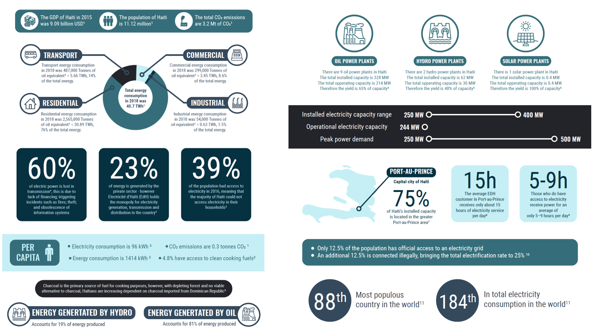
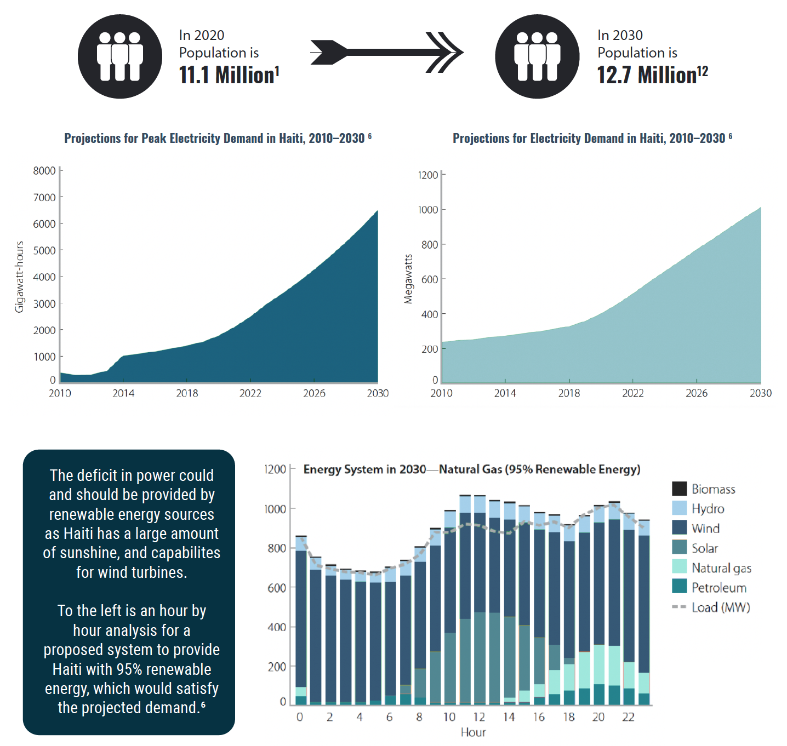
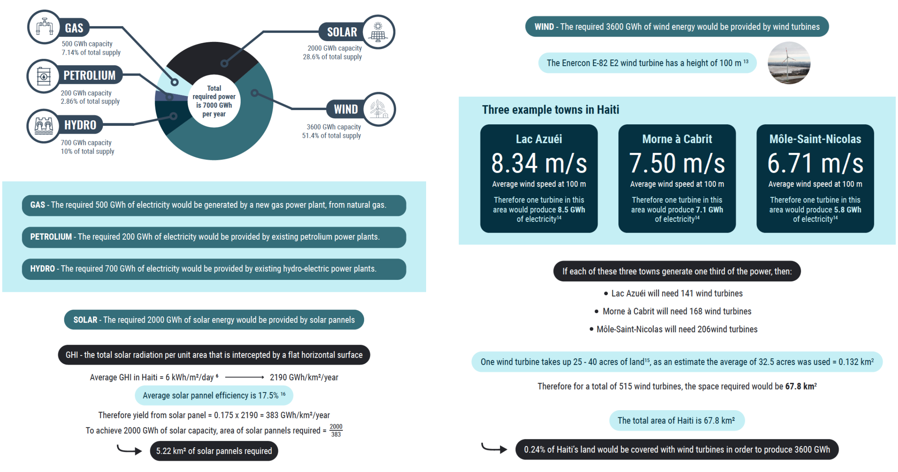

Louis Cutner
In this report, I investigated the energy requirements for Haiti in 10 years time, and suggested a
proposal for how they might meet this demand. I chose Haiti, as when researching countries’
energy consumption I found it fascinating that over 60% of their electricity is lost in transmission
due to the poor infrastructure, and furthermore only 39% of the population currently has access to
electricity.
I started by investigating the current energy consumption – which in 2018 was 40.7 TWh, and the
total CO2 emissions were 3.2 Mt of CO2. I learnt that the largest share of energy, 76%, is used for
residential purposes. To further my understanding of Haiti’s energy consumption, I looked into the
production of energy. Although Haiti has enormous potential for renewable sources of energy
generation, 81% of their energy is generated from oil. Furthermore the current capacity for
electricity is insufficient as of those that have access, on average one person only receives 5-9
hours of electricity per day. Furthermore emphasising how dire the situation is, Haiti is the 88th
most populated country in the world and yet they are 184th in total electricity consumption.
By 2030, the entire nation is expected to be connected to electricity, and the population is expected
to grow from 11.1 million to 12.7 million. For this reason I focused my proposal on how to supply
sufficient electricity for this enormous deficit. My proposal generates 90% of the energy from
renewable sources, utilising Haiti’s potential for solar and wind energy. 2000 GWh of solar
electricity is generated by 5.22 km2 of solar panels, and 3600 GWh of wind energy is produced by
515 wind turbines taking up 67.8 km2. Only existing petroleum power plants are used, and one
small gas power plant must be built to supply 500 GWh when renewable are unable to.
Current Energy Consumption, Production, and Supply
Haiti has significant renewable energy resources. Strong solar irradiance throughout the country, numerous
areas with significant wind resource potential, as well as underutilized opportunities for small hydropower
and biomass all contribute to Haiti’s significant renewable energy prospects. So far, however, very little of
this potential has been developed - besides two hydro power plants.6

Energy requirement in 10 years time
It is assumed that Haiti will experience significant economic growth and will achieve universal electricity
access by 2030. Using population growth estimates, we assume that by 2030, Haiti’s average per capita
electricity consumption will more closely resemble that of five neighboring countries: the Dominican
Republic, El Salvador, Honduras, Jamaica, and Nicaragua. Projections assume an annual growth in
electricity demand of 9% from 2012 to 2020, and of 13.4% from 2021 to 2030, to reach a total of 6,500 GWh
by 2030. Based on this annual demand, peak demand is estimated to exceed 1 GW by 2030, indicating that
Haiti will need to add significant new capacity in order to secure demand at peak times of the day over the
next 20 years.6

Proposal
This proposal looks mainly at how to accomodate Haiti’s massivly increased demand for electricity as more
of the population become connected to the grid and the population grows. Furthermore this proposal is
predominantly powered by renewables, creating a sustainable future.
In this future scenario, Haiti will
be able to provide constant electricity to the entire population, and the vast
majority of the energy being created will be renewable. Haiti is an ideal candidate for renewable energy as
it has strong winds and intense sunlight. Only one fossil fuel plant is being created in order to fill the gap
left by the unpredictability of renewable power generation. The space required for the suggested
infrastructure is relatively small, especially given that Haiti is largely baren.
